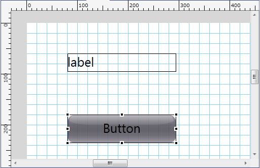
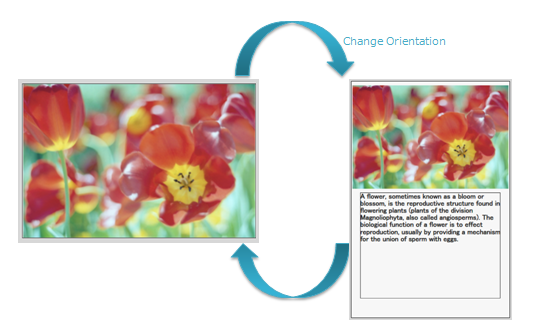
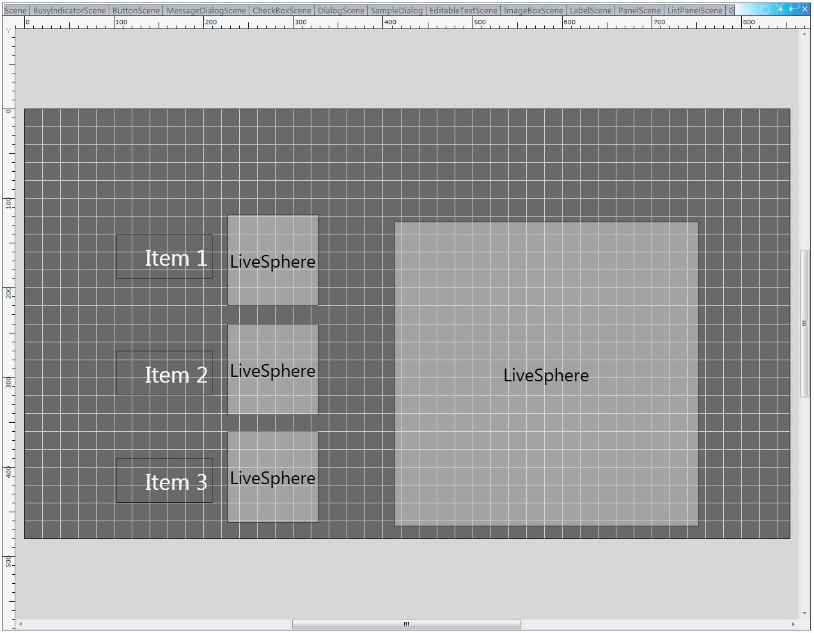
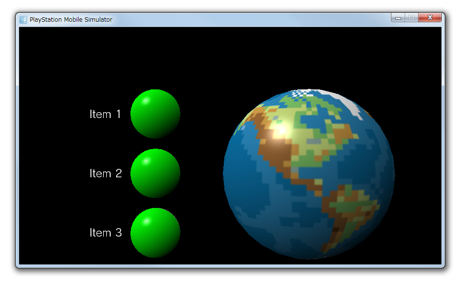
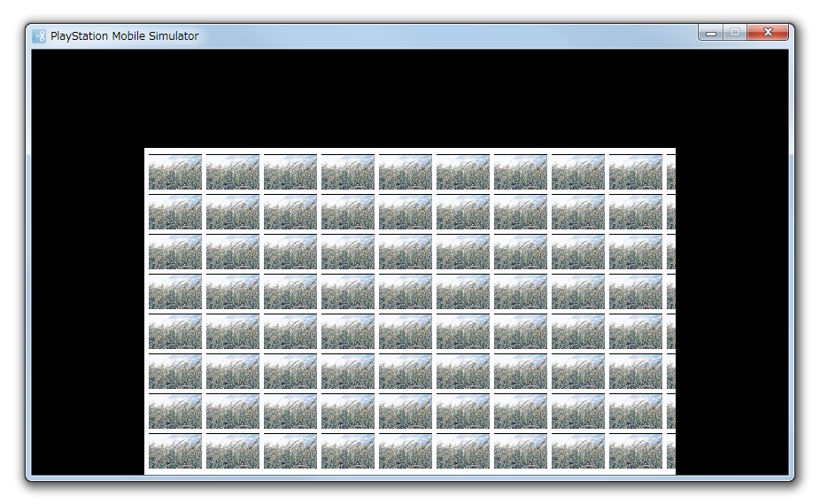
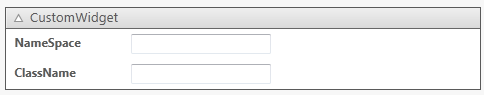

本章では、アプリケーションのレイアウトを効率よく作成するためのTipsを紹介します。
UI Composerでは、ウィジェットを簡単に整列させるための機能としてガイド線とグリッド線を提供しています。 ガイド線、グリッド線への吸着や表示/非表示は、メニューで設定可能です。また、ガイド線・グリッドの色設定、グリッド幅は、メニューの[ファイル]-[環境設定]で行うことができます。 ガイド線には「ユーザー定義ガイド」「スマートガイド」の2種類があります。
特定の座標にウィジェットを配置した場合に有効なガイド線で、レイアウトウィンドウのルーラーからマウスでドラッグし引き出し、自由に設定することができます。 メニューからガイド線の追加、削除を行うことも可能です(図1)。

図 1 ユーザー定義ガイド
レイアウトキャンバスに配置されているウィジェットとマウスで操作しているウィジェットの整列を補助するためのガイド線です(図2)。
配置されているウィジェットと操作しているウィジェットの上下左右の端、もしくは中央が揃った場合に表示されます。

図 2 スマートガイド
レイアウトキャンバス上に格子状に引かれた線がグリッド線です(図3)。
図 3 グリッドガイド
UIToolkit で作成されたアプリケーションは解像度の異なるデバイス上で動作することが可能です。そのため、UI Composerでレイアウトした Scene のサイズと、実機で描画される際の Scene のサイズが異なる場合があります。
Scene や Panel のサイズが変わった際に、UISystem はレイアウトアンカー( Anchor )の設定に基づいて Scene や Panel 内部のウィジェットをレイアウトします。Anchor では、上下左右のマージンを固定にするかどうか、幅・高さを自動的にリサイズするかどうかを設定することが可能です。UI Composer を利用すると、Anchor を視覚的に設定することが可能です(図4)。

図 4 Anchor Customizer
Anchor Customizerは、6つのトグルスイッチ群になっています。ウィジェットの親ウィジェットがリサイズされたときの挙動は、Previewer にアニメーションで表示されます。アニメーションは、マウスカーソルが Anchor Customizer の上にあるときにのみ再生されます。
UI Composer で設定した内容と、出力されるソースコードで指定される Anchor の値の関係は下図のようになります。

図 5 レイアウトアンカーの設定と、ウィジェットがオートリサイズされた結果
ちなみに、Panelクラスのレイアウトを行っている場合(レイアウトキャンバスの表示がPanelである場合)は、レイアウトのルートとなるPanelのレイアウトアンカーを設定することはできません(別のレイアウトキャンバス上にレイアウトする際は可能です)。インスタンス化するタイミングで適切なレイアウトアンカーを設定するようにして下さい。
デバイスの把持方向によって異なる画面レイアウトを指定することが可能です。
メニューの[表示]-[キャンバスの向き]を選択すると、レイアウトキャンバスの方向が切り替わります(図6)。
図 6 レイアウトキャンバスの方向切替
ウィジェットはレイアウトキャンバスの方向毎に それぞれ位置・サイズなどのプロパティを指定できる ようになっています。つまりデバイスの向きを縦にした場合と横にした場合のそれぞれの状態に対して画面のレイアウトを行うことが可能です。
出力されるソースコードには、画面レイアウトを切り替えるメソッドが生成されます(下記ソースコード参照)。デバイスの把持方向が変わったタイミングなどでそのメソッドを呼び出すことで、適切なレイアウトを指定することが可能です。
把持方向に合わせて初期化することができ、指定しない場合は、水平方向のレイアウトとなります。
partial class MyScene { // ... private void InitializeWidget() { InitializeWidget(LayoutOrientation.Horizontal); } private void InitializeWidget(LayoutOrientation orientation) { // create instance SetWidgetLayout(orientation); // set property // update language } private LayoutOrientation _currentLayoutOrientation; public void SetWidgetLayout(LayoutOrientation orientation) { switch (orientation) { case LayoutOrientation.Vertical: this.DesignWidth = 400; this.DesignHeight = 600; sceneBackgroundPanel.SetPosition(0, 0); sceneBackgroundPanel.SetSize(400, 600); sceneBackgroundPanel.Anchors = Anchors.Top | Anchors.Bottom | Anchors.Left | Anchors.Right; sceneBackgroundPanel.Visible = true; ImageBox_1.SetPosition(0, 10); ImageBox_1.SetSize(400, 264); ImageBox_1.Anchors = Anchors.Top | Anchors.Height | Anchors.Left | Anchors.Width; ImageBox_1.Visible = true; Label_3.SetPosition(23, 282); Label_3.SetSize(353, 268); Label_3.Anchors = Anchors.Top | Anchors.Height | Anchors.Left | Anchors.Width; Label_3.Visible = true; break; default: this.DesignWidth = 600; this.DesignHeight = 400; sceneBackgroundPanel.SetPosition(0, 0); sceneBackgroundPanel.SetSize(600, 400); sceneBackgroundPanel.Anchors = Anchors.Top | Anchors.Bottom | Anchors.Left | Anchors.Right; sceneBackgroundPanel.Visible = true; ImageBox_1.SetPosition(0, 0); ImageBox_1.SetSize(600, 400); ImageBox_1.Anchors = Anchors.Top | Anchors.Height | Anchors.Left | Anchors.Width; ImageBox_1.Visible = true; Label_3.SetPosition(0, 398); Label_3.SetSize(214, 36); Label_3.Anchors = Anchors.Top | Anchors.Height | Anchors.Left | Anchors.Width; Label_3.Visible = false; break; } _currentLayoutOrientation = orientation; }UIComposer で出力するコードは水平方向（LayoutOrientation.Horizontal）のレイアウトがデフォルトとなっています。
もし、垂直方向（LayoutOrientation.Vertical）を起動時のデフォルトとしたい場合は、コンストラクタ内でInitializeWidget(LayoutOrientation)を使うように書き換える必要があります。
UIComposerではユーザーが作成したレイアウト（Scene、Panel、Dialog、ListPanelItem）をシミュレータ上でプレビューすることが可能です。
プレビューはツール上で現在編集中のレイアウトに対して行われ、レイアウトのサイズと同じサイズで表示されます。
プレビューで確認できるのは以下の項目です。Buttonを押したときの動作などはプレビューできません。ツールのプレビューで確認できるのは見た目に関する項目のみです。
- ツール上で配置したWidgetのレイアウト
- 文字、画像等のツール上で設定したWidgetの状態
- SceneのTransitionやWidgetのEffectなどのアニメーション
プレビューの利用手順
- メニューから[ファイル]-[プレビュー]を選択してください。
プレビュー機能の特記事項
- ListPanel、GridListPanel、LiveListPanelは設定されたListPanelItemを自動で100個追加して表示します。
プレビュー例
図 7 レイアウトキャンバス上での表示 (LiveSphere)
図 8 プレビューでの表示 (LiveSphere)

図 9 レイアウトキャンバス上での表示 (GridListPanel)
図 10 プレビューでの表示 (GridListPanel)
標準のウィジェットには含まれないユーザーが独自に作成したウィジェットをレイアウトすることができます。
他のウィジェットと同様に WidgetList ウインドウから CustomWidget をレイアウトキャンバス上にドラッグアンドドロップしてレイアウトします（図11）。

図 11 カスタムウィジェットのレイアウトキャンバスへの配置

図 12 カスタムウィジェットのレイアウトキャンバス上での表示
CustomWidget を選択すると、プロパティウィンドウに NameSpace プロパティと ClassName プロパティが表示されます。
NameSpace プロパティを編集することで、CustomWidget のネームスペースを、ClassName プロパティを編集することで、CustomWidget のクラスを設定することができます（図13）。
図 13 カスタムウィジェットのプロパティ
ただし、レイアウトキャンバス上での表示には何も反映されません。
- CustomWidget は、ユーザーが独自に作成したウィジェットであるため、どのようなプロパティが存在するかは不明です。そのため、UIComposer では CustomWidget のプロパティについては編集を行うことはできません。
- CustomWidget は、ユーザーが独自に作成したウィジェットであるため、どのような表示をされるのかは不明です。そのため、UIComposer では CustomWidget のダミーを表示をすることでプレビューできるようにしています（図14）。

図 14 カスタムウィジェットのプレビュー表示
- 「カスタムウィジェットのレイアウト」機能の追加に伴い、今までの「カスタムパネルのレイアウト」機能は廃止となりました。